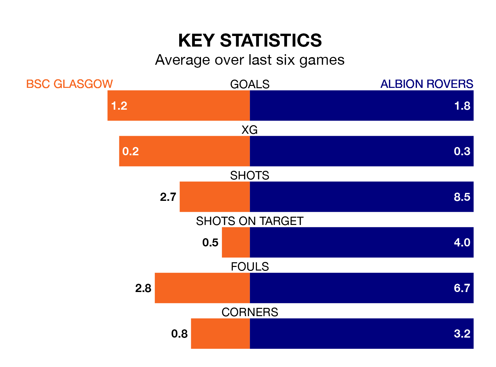

BSC Glasgow are on a poor run ahead of hosting Albion Rovers at the moreroom.com Stadium on Tuesday, with just four points collected from their last six games.
BSC Glasgow have picked up one win and one draw in their last six Lowland Football League games, and face a Wee Rovers side whose last six games have brought three wins and one draw.
BSC Glasgow are 14th in the table after 23 games, of which they have won eight and drawn three, earning 27 points.
Albion are two places ahead of the hosts in 12th, with eight wins and five draws putting them on 29 points.
With 28 goals in 19 games so far this season, Rovers are the league's third-lowest scorers with 1.5 goals per game. But they are conceding fewer than average too, letting in 19 goals at a rate of 1.0 per game.
BSC Glasgow are also below average scorers, with 1.5 goals per game, compared to a league average of 1.7. They have conceded 1.7 goals per game.
BSC Glasgow's last match was on January 27, a 4-0 loss against Berwick Rangers.
Albion beat Gala Fairydean Rovers 3-0 last time out, also on January 27.
Updated: 11:47 (UTC), 05/02/24